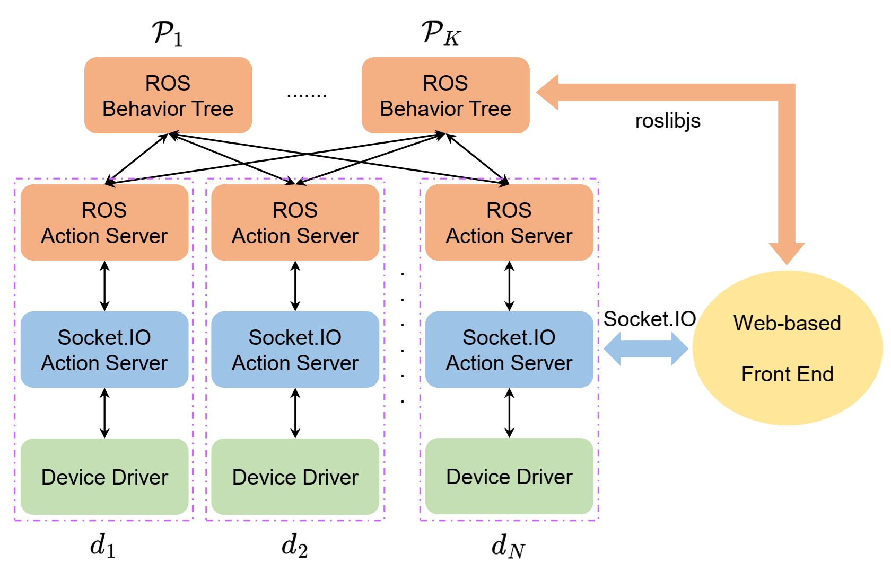
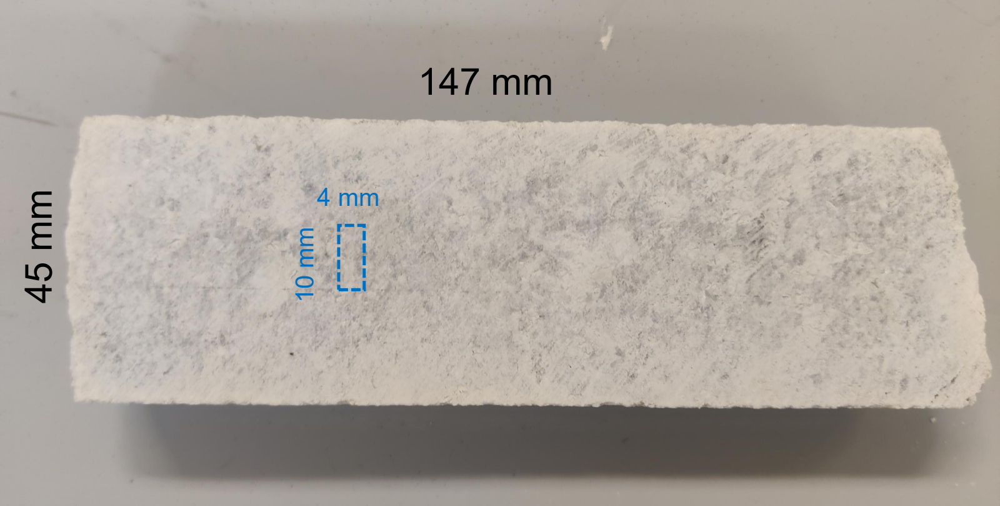
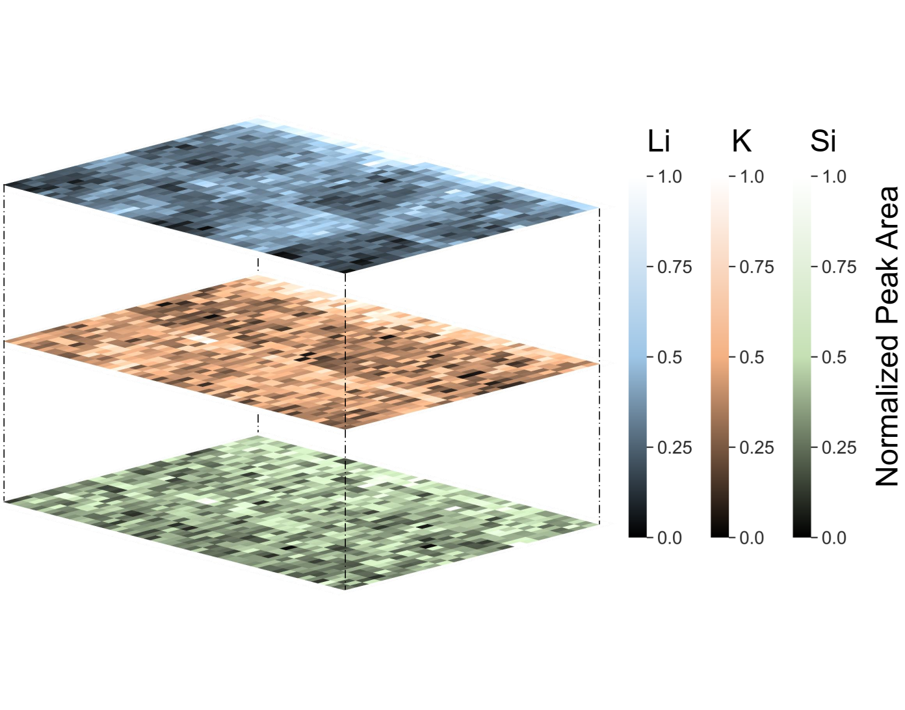

Robotic Platform for Mineral Characterization
Xuan Cao, Yuxin Wu, Michael Whittaker
https://arxiv.org/abs/2509.19541Summary
This paper introduces a generalized software architecture based on dual-layer action servers that facilitates the development of autonomous experimental systems, with an autonomous elemental characterization platform as an example.
The basic workflow to implement such a system based on this architecture (suppose hardware-level development is already completed and device drivers are available) is as follows:
- For each device that would be integrated together, identify the actions that the device would take. For example, in the manuscript, the gantry has only one “move_to” action (moving to a specific location), and the LIBS analyzer has three actions “measure” (collecting LIBS spectra), “export” (exporting collected LIBS spectra to local csv files), and “analyze”.
- Implement a web-based action server for each device. The servers should be able to handle incoming requests of performing actions identified in the previous step by calling device drivers. The choice of communication protocol for servers is flexible. We used Socket.io in this study, but HTTP or plain Socket would also work. Refer to https://github.com/Living-Minerals-Lab/LIBS_trigger for our implementation of the LIBS analyzer action server.
- (Optional) Implement a web-based frontend (GUI) to enable convenient manual operations of devices. The fronted would create action clients and send requests to the action servers. There’re many options for the implementation, and we used Vue3 + Typescript. Refer to https://github.com/Living-Minerals-Lab/mini_platform_fe for our implementation of the frontend.
- Implement ROS/ROS 2 action servers all devices. In our implementation, a ROS/ROS 2 action server doesn’t handle requests directly; it includes a web-based action client and transits ROS/ROS 2 requests to the corresponding web-based action server. ROS/ROS 2 action servers allows the usage of other resources in the ROS/ROS 2 ecosystem and further integration with other ROS/ROS 2 – compatible devices and systems. Refer to https://github.com/Living-Minerals-Lab/mini_platform for our implementation of ROS 2 action servers.
- Design and implement a behavior tree which enables autonomous task plan and execution. Refer to Behavior Trees in Robotics and AI: An Introduction for more details about behavior trees. Refer to https://github.com/Living-Minerals-Lab/mini_platform for our implementation of behavior trees.
Software Architecture
The software architecture is based on a dual-layer action server design, consisting of:
- Socket.IO Action Server: receives requests from Socket.IO clients and handles those requests by calling the device's driver.
- ROS Action Server: incorporates a corresponding Socket.IO client and serves as a bridge between ROS action clients and the Socket.IO action server.
On top of all action server blocks lies a Behavior Tree (BT) for planning and executing an experimental protocol.
Platform Overview
The main body of the platform is a gantry system used in CNC machining.
An analytical instrument is mounted to the gantry head and approaches samples placed on the working area and perform measurements.
A stereo depth camera (ZED 2i, StereoLabs) is used to provide the gantry with visual information of samples.

Demonstration
A dense LIBS scan of a sample surface using the developed platform is demonstrated. This is a particularly useful technique for materials containing lithium, such as the spodumene-bearing pegmatite core sample.
 